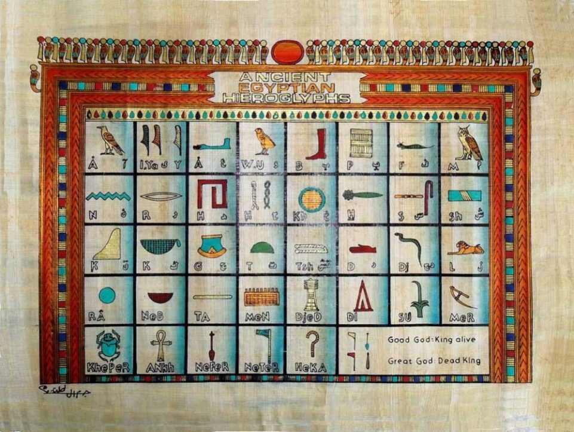
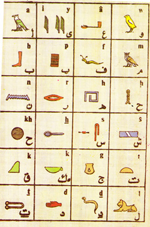
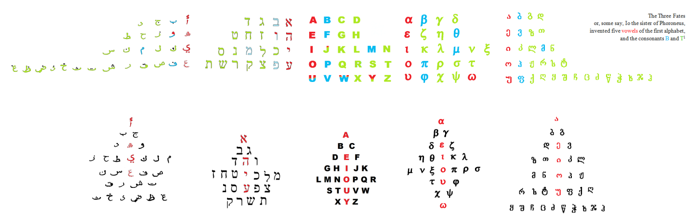
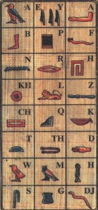
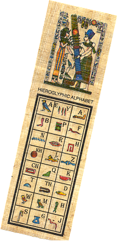

Самые удивительные вещи порой можно встретить в самых неожиданных местах. В сувенирных лавках Египта продают подобные закладки, которые, как ни странно, не являются фантазией современных художников, которую хитрые торговцы выдают за реальность, но представляют из себя предметы поистине исторической ценности.
Расположение символов по алфавиту не случайно, но предопределено глубинной структурой, которую несут в себе все алфавитные письменности и не только (гласные, губные, язычные)


Зачастую вместо Ī используют М, но это не совсем корректно.
 
Истоки подобного расположения букв проследить не удалось. Так он встречается у Баджа, который ссылается на Бирша, каких-то древних египтологов и Брюгша, который называет подобную последовательность древнейшим египетским алфавитом и ссылается на Ружа, который не ссылается ни на кого.Ещё одной странностью является и то, что Бадж и Брюгш располагают М среди остальных губных, Руж же располагает М (но не W) среди язычных.